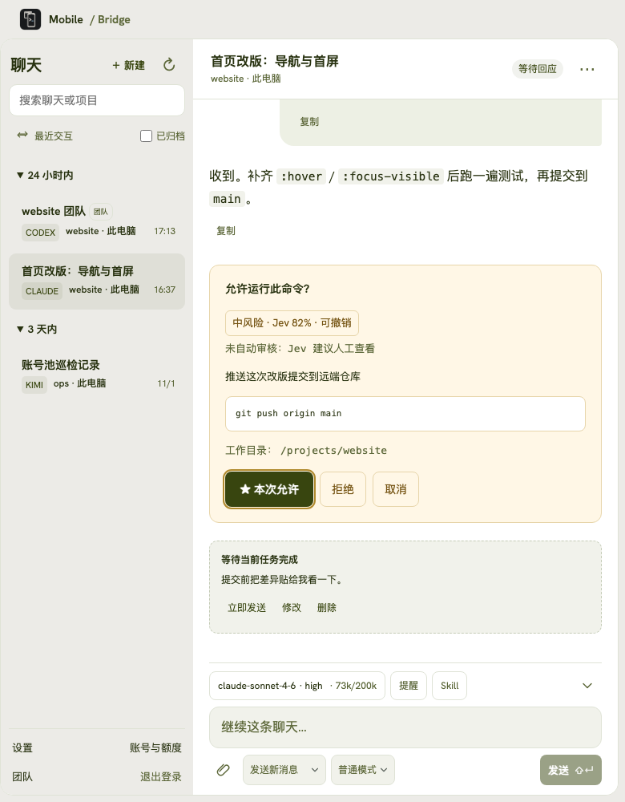

把任务交给一支团队。
为项目建默认团队，指定主控、成员与评审。发一条消息，阶段轨道逐个任务显示执行者与状态，完成后可在 Run 页查看结果与耗时。
成员复用各自已有会话；同一工作区的写操作串行。

不必安装，先走一遍你的工作流程。点击设备里的按钮，也可以直接选择下方场景。
工作台使用产品界面与示例数据；手机首页为浏览器模拟。这里包含开发中的界面调整，安装包以下载版本为准。聊天回复、审批与迁移动作均为本页模拟；不连接电脑、不调用模型、不读取或上传你的文件，刷新即重置。
以下能力来自同一个网关：手机 Web、Android、iOS 与桌面浏览器共用项目、聊天和团队。
为项目建默认团队，指定主控、成员与评审。发一条消息，阶段轨道逐个任务显示执行者与状态，完成后可在 Run 页查看结果与耗时。
成员复用各自已有会话；同一工作区的写操作串行。
模型、思考强度、Skill、权限与附件都在输入区。普通、计划、目标模式随时切换；排队下一条、补充当前任务或直接停止。
一条聊天绑定一个 Agent；要换 Agent 请用「迁移」。
权限卡先给出风险评估（例如「中风险 · Jev 82%」）与未自动审核的原因，再等你决定；难以撤销的命令会直接标出来。
自动审核按策略执行，越权操作仍需人工确认。
Codex 官方账号与自建 API 统一切换，额度与重置卡就在账号旁；Kimi、ZCode、MiniMax、CodeBuddy 各有账号池，支持额度、自动切换，CodeBuddy 还能每日签到。
切换会重启 Codex；池内凭证只留在本机。
把整条会话迁到另一个 Agent，选择复制范围与目标模型、思考强度；也可以压缩转录，腾出上下文。
迁移会新建会话，原会话保持不动。
划选正文直接变成引用评论；工具调用折叠成一行工具名，展开才看内容；模型旁显示 73k/200k 的上下文用量。
只读会话不提供引用入口。
保存 Mac 或 Windows 网关地址，回到电脑列表随时切换。进入聊天后，把屏幕留给消息和工作台。
保存多台电脑及登录状态。Web 支持记住登录，密码更新或凭证撤销后需重新验证。
点击直接复制，图片预览有关闭入口，附件调用系统保存。聊天列表支持下拉刷新，Android 首页连续两次返回可退出。
选择模型、思考程度、Skill 与权限，上传附件，普通／计划模式自由切换。主聊天保留目标模式，团队会话改用团队执行。
中英文界面切换，聊天内容保持原样。设置里调整显示、图片缩略图，主动检查 App 更新；不会自动下载安装。
App 前台可同步任务提醒，通知可清空，点击可回到对应电脑和聊天。外部 Bark、ntfy 通道继续保留，支持的通知链接可跳回已保存的电脑。
查看执行、待回应和连接状态，点击回到聊天。不显示聊天正文；App 不活跃时可能显示最后已知状态。
本预览不保证后台或锁屏通知送达，灵动岛也不等于后台实时推送。网关从源码构建；手机安装包按 2.0 预览版分发。
macOS、Windows 与 Linux 均可从源码构建网关。Web 工作台由预览网关提供，浏览器打开地址即可。
源码构建 ↗下载 APK，按系统提示安装。已有预览版可覆盖安装，保留已保存的电脑。
下载 Android APK ↗IPA 需要用户自行签名后安装，也可下载 Xcode 工程，使用自己的 Apple 账号签名安装。尚无 App Store／TestFlight 版本，下载 IPA 不会直接安装。
手机端需要配套的 2.0 预览网关；首次体验前保留配置备份，相同端口只运行一个网关。
先从局域网开始，再按需要配置外网入口。
电脑上先打开 Codex App，再构建或下载网关二进制并启动。
网关默认监听局域网地址，首次启动生成 config.json 与「首次登录.txt」凭据文件。
手机浏览器打开 http://<电脑 IP>:8787，用「首次登录.txt」中的凭据登录。
打开已有会话或新建聊天，查看进度、发送消息、回应支持的确认请求。
网关为单一 Go 二进制，运行无需 Python、Node.js 或部署 Agent。局域网内设备需可互访；电脑保持唤醒与在线。
Codex 官方账号与自建 API 统一管理；Kimi、ZCode、MiniMax、CodeBuddy 各有账号池。切换前结束运行中的任务，Codex 会重启，网关保持在线。
从会话管理到阅读、确认和通知，按你的使用方式展开。
正式版已具备的基础能力；团队、账号池与迁移等新能力见上方。
能力沿用原 Codex 会话与主机配置。复杂 MCP 表单及部分特殊确认仍需在桌面处理；云聊天尚未接入；v2 预览新增项目文件传输，包含 SSH 工作区。
多个入口可以同时启用，连接同一个电脑网关。
连接教程适用于正式版 v0.1.0 及后续版本。临时 HTTPS 最方便快捷，固定域名、服务器与 NAS 为进阶方案。
推荐个人快速接入：无需域名和服务器，配置最少、上手最快。网关与隧道进程持续运行且连接正常时，通常可以沿用当前地址；Cloudflare 不保证永久占用或持续可用。隧道重建导致地址变化后，启用“每次启动网关及入口变化时发送地址”并配置好通知渠道，即可接收新地址；送达时间取决于网络与通知服务。
进阶方案需要具备 DNS、HTTPS、SSH、服务器或 NAS 管理等相关知识。本文命令与配置仅供参考，不保证适合你的环境；执行前请自行核对、备份并取得必要授权。使用、修改或执行这些示例的风险由使用者自行承担。在适用法律允许的最大范围内，项目作者与贡献者不对由此造成的数据丢失、服务中断、安全事件、费用或其他损失承担责任；依法不得排除或限制的责任除外。
启动局域网访问，使用 App 显示的地址即可开始，无需额外域名。
本地预览版已内置 cloudflared；较早的安装包可能需要先安装或选择该组件。启用临时连接并启动网关即可，地址可能变化。
域名在原注册商续费，DNS 托管到 Cloudflare；电脑、Codex 和网关需要保持在线。try2love.com 和 https://codex.try2love.com 仅用于配置演示，不代表可访问的演示站点，请替换成自己的域名。
在 Cloudflare 添加 try2love.com，复制分配的两条名称服务器（NS）。已有网站和邮箱时，先核对并保留原 DNS 记录。
在阿里云等注册商的域名管理中，把 DNS 服务器改为这两条 NS，等待 Cloudflare 显示 Active。域名仍在原注册商续费；后续解析在 Cloudflare 管理。
在 Cloudflare 的 Tunnels 中创建 Cloudflared 隧道，从连接器安装命令中复制 Tunnel Token。只复制 Token，不是整条命令或 API Key。
在 config.json 添加“固定域名 · Cloudflare Tunnel”连接，填写 https://codex.try2love.com 和 Token，启动网关。回到 Cloudflare 确认连接器已连接。
在隧道 Routes 中添加 Published application / 公开主机名：子域名 codex，域名 try2love.com，路径留空。服务类型选 HTTP，地址填 localhost:8787（端口与网关一致）；保存后自动创建 DNS 记录。
在 Cloudflare 为网关子域名添加 HTTPS 重定向规则。打开 HTTP 地址应先跳到 HTTPS 再登录；具体字段见下方完整图解。
用电脑浏览器和手机蜂窝网络分别访问域名，验证登录、读取聊天和发送消息。Healthy 只代表隧道已连接，网页还需要实际验证。
找不到域名：检查 NS、Active 状态与 DNS 缓存。1033：检查隧道和 Token。502：检查本机网关、HTTP 服务类型和端口。无需把域名指向电脑 IP，也不需要 SSH 密码。
① 手动配置 DNS、HTTPS 与 SSH 转发权限；② 在 App 保存普通用户 SSH 配置并检查登录；③ 启动连接、检测固定入口。App 不接收 sudo 密码，不安装服务器软件。
复用现有域名和反向代理，可选 Docker 中间入口。NAS 提供访问路径，任务仍在原电脑或 SSH 主机执行。
网关登录不会自动打通网络。固定 HTTPS 和 NAS 需要完成首次网络配置；使用期间保持电脑唤醒、原 Codex App 与网关运行。
v0.1.0 · 当前正式版
v0.1.0 更名为 Mobile / Bridge，发布迁移至 BenedictKing/mobile-bridge，完整继承既有能力。桌面安装包线自本版本起停止维护，网关转入源码构建与随版本发布的网关二进制。
网关为单一 Go 二进制：从源码构建，或获取随版本发布的网关二进制。
下载后核对 Releases 提供的 SHA-256。macOS 拦截浏览器下载的二进制时，核对哈希后执行 xattr -d com.apple.quarantine 放行。
所有版本与 SHA-256 校验文件 ↗已在使用源码运行？拉取最新 main 重新构建并重启网关即可；数据目录中的配置会保留。
不需要。网关使用独立登录；模型调用仍沿用原 Codex 会话的提供商和认证。官方登录、API 或自定义服务需先在原 App 中正常工作。
可以使用主流现代浏览器访问可达的网关地址。网关可在 macOS、Windows 与 Linux 上运行；访问端不必使用相同系统。
不能。电脑需保持唤醒、联网，并运行原 Codex App 和网关。SSH 任务还需要对应主机与连接可用。
在网关数据目录的 notifications.json 配置 Bark 或 ntfy，再到网页聊天中开启“提醒”。可单独开启完成通知；即使关闭网页，在线网关仍会监听已关注聊天。
刷新网页，在“账号与接入”面板添加或导入配置后切换。先结束运行中的任务；切换会重启 Codex，Bridge 网关保持在线。
先核对 Release 的 SHA-256，再执行 xattr -d com.apple.quarantine <文件> 清除隔离标记。仅放行确认信任的下载。
复杂 MCP 表单、身份验证挑战和部分特殊请求需在桌面处理。当前适配 Codex App，其他 Agent App 与云聊天尚未接入。包含 SSH 工作区的项目文件传输需要使用 v2 预览网关。
拉取最新源码重新构建并重启网关；数据目录配置会保留。Release 二进制用户重新下载新版本即可。网络、登录、通知及兼容性说明见项目 README。
如果 Mobile / Bridge 让你的 Codex 使用更方便，欢迎在 GitHub 支持项目，也欢迎通过 Issue 分享使用体验和改进建议。
界面按浏览器宽度适配。点击截图放大，查看当前手机界面。